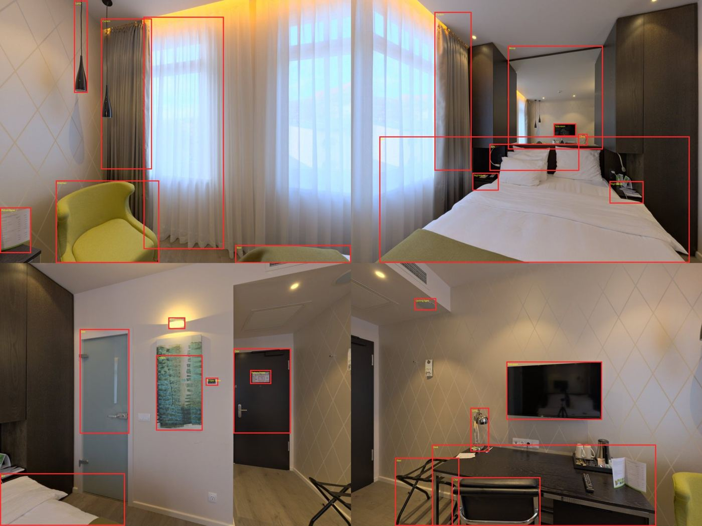
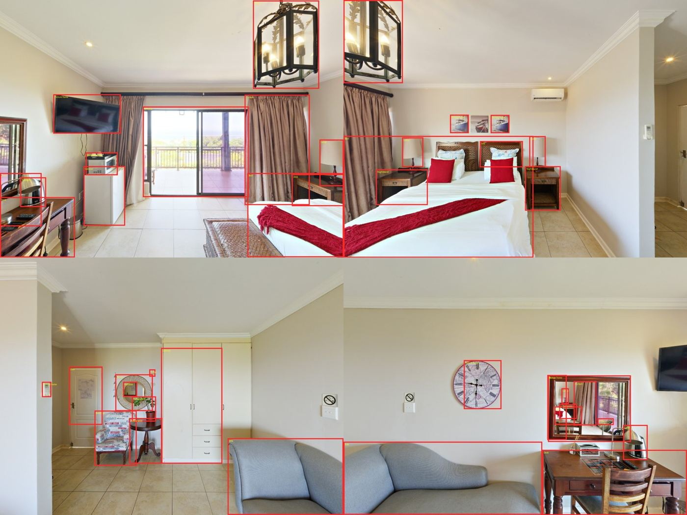
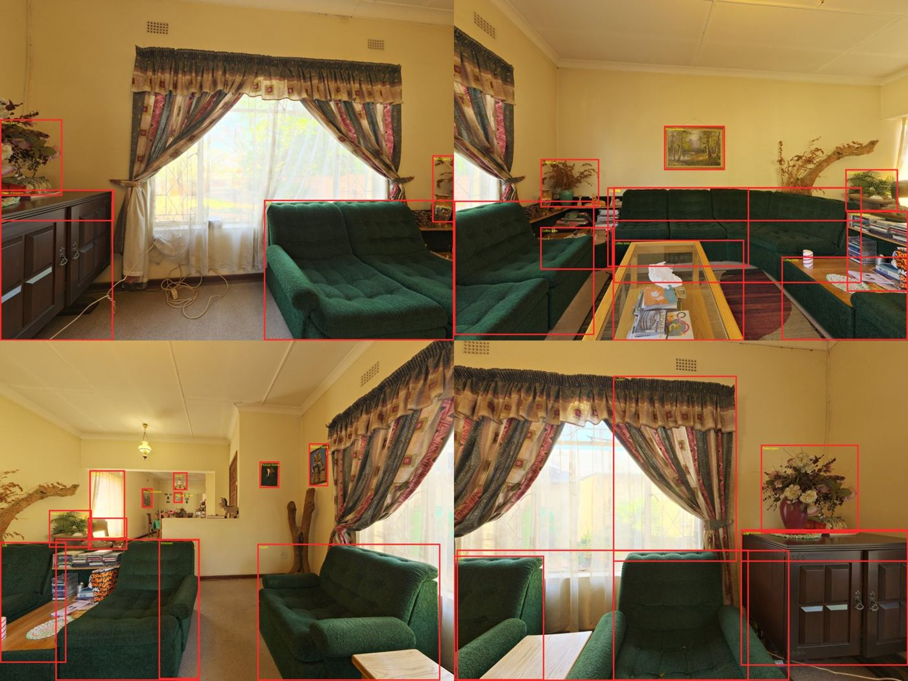
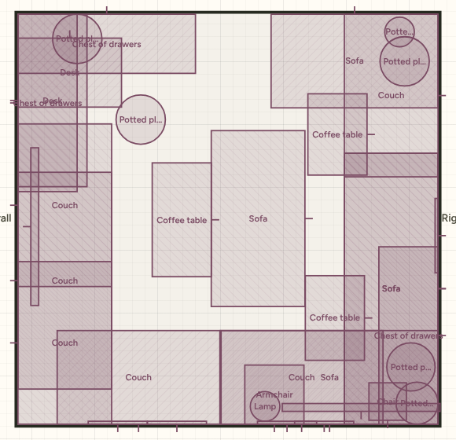

<title>Capture Flow Field Test</title>
<meta name="claude:viewport-fit-sides" content="cover">
<link rel="preconnect" href="https://fonts.googleapis.com">
<link rel="stylesheet" href="https://fonts.googleapis.com/css2?family=Figtree:wght@400;500;600;700&family=Fraunces:opsz,wght@9..144,500;9..144,600&display=swap">
<style>
/* Layout: one reading column; findings as a scorecard, then three lanes of change (shoot / see / build). Danmu's own tokens. */
:root{
  --paper:#f7f4ee; --card:#fffdf9; --ink:#2b2a26; --muted:#6b675e; --edge:#d9d3c6; --hair:#e8e3d8;
  --accent:#4f6b45; --accent-tint:#e6ede1; --amber:#b07a1e; --amber-tint:#f6ecd9;
  --danger:#a8432f; --danger-tint:#f6e3de; --ok:#3f6b3a;
  --sans:"Figtree",system-ui,sans-serif; --display:"Fraunces",Georgia,serif;
}
@media (prefers-color-scheme:dark){:root:not([data-theme="light"]){
  --paper:#1c1b18; --card:#25241f; --ink:#ece8df; --muted:#a8a296; --edge:#454238; --hair:#34322b;
  --accent:#9cbb8f; --accent-tint:#2c3627; --amber:#e0b060; --amber-tint:#3a3120;
  --danger:#e8907c; --danger-tint:#3d2621; --ok:#9cc493; color-scheme:dark}}
:root[data-theme="dark"]{
  --paper:#1c1b18; --card:#25241f; --ink:#ece8df; --muted:#a8a296; --edge:#454238; --hair:#34322b;
  --accent:#9cbb8f; --accent-tint:#2c3627; --amber:#e0b060; --amber-tint:#3a3120;
  --danger:#e8907c; --danger-tint:#3d2621; --ok:#9cc493; color-scheme:dark}
body{background:var(--paper);color:var(--ink);font:16px/1.6 var(--sans)}
.wrap{max-width:860px;margin:0 auto;padding-block:40px 80px;padding-left:max(16px,env(safe-area-inset-left,0px));padding-right:max(16px,env(safe-area-inset-right,0px));display:grid;gap:40px}
h1,h2,h3{font-family:var(--display);font-weight:600;text-wrap:balance;line-height:1.2;margin:0}
h1{font-size:clamp(28px,5vw,40px)} h2{font-size:26px} h3{font-size:18px;font-family:var(--sans);font-weight:700}
p{margin:0;max-width:66ch} .lede{font-size:18px;color:var(--muted)}
.eyebrow{font-size:12px;letter-spacing:.08em;text-transform:uppercase;color:var(--accent);font-weight:700}
section{display:grid;gap:16px}
.verdict{display:grid;grid-template-columns:repeat(auto-fit,minmax(220px,1fr));gap:12px}
.verdict div{background:var(--card);border:1px solid var(--hair);border-radius:14px;padding:16px;display:grid;gap:4px}
.verdict b{font-size:14px} .verdict span{font-size:14px;color:var(--muted)}
.good b{color:var(--ok)} .bad b{color:var(--danger)} .meh b{color:var(--amber)}
.tbl{overflow-x:auto;border:1px solid var(--hair);border-radius:14px;background:var(--card)}
table{border-collapse:collapse;width:100%;font-size:14px;font-variant-numeric:tabular-nums}
th,td{padding:10px 12px;text-align:left;border-bottom:1px solid var(--hair);vertical-align:top}
th{font-size:12px;letter-spacing:.06em;text-transform:uppercase;color:var(--muted);font-weight:600}
tr:last-child td{border-bottom:0}
figure{margin:0;display:grid;gap:8px} figure img{border-radius:12px;border:1px solid var(--hair);width:100%;height:auto}
figcaption{font-size:14px;color:var(--muted)}
.pair{display:grid;grid-template-columns:1fr 1fr;gap:12px} @media (max-width:640px){.pair{grid-template-columns:1fr}}
.recs{display:grid;gap:12px;counter-reset:r}
.rec{background:var(--card);border:1px solid var(--hair);border-radius:14px;padding:18px;display:grid;gap:8px}
.rec h3{display:flex;gap:10px;align-items:baseline;flex-wrap:wrap}
.tag{font:600 11px/1 var(--sans);letter-spacing:.06em;text-transform:uppercase;padding:5px 8px;border-radius:999px}
.t-acc{background:var(--danger-tint);color:var(--danger)} .t-sim{background:var(--accent-tint);color:var(--accent)} .t-both{background:var(--amber-tint);color:var(--amber)}
.rec p{font-size:15px} .why{color:var(--muted)}
code{font-size:13px;background:var(--hair);padding:1px 5px;border-radius:5px}
ul{margin:0;padding-left:20px;display:grid;gap:6px} li{max-width:66ch}
.note{font-size:14px;color:var(--muted);border-top:1px solid var(--hair);padding-top:16px}
</style>

<main class="wrap">
<header style="display:grid;gap:12px">
  <div class="eyebrow">Danmu · capture flow · field test</div>
  <h1>What happened when four real rooms went through the camera flow</h1>
  <p class="lede">Four photographed rooms (empty, hotel, suite, family lounge), each run through the real capture → find furniture → studio route twice: once on an ultrawide lens, once on a standard 1× lens. Shuffled uploads were included. Below: what the room should have looked like, what Danmu built, and what to change so the flow stays simple and gets closer to right.</p>
</header>

<section>
  <h2>The short version</h2>
  <div class="verdict">
    <div class="good"><b>Wall order: perfect</b><span>24 of 24 shuffled photos landed on the right wall, from the time each was taken. Wall-length labels matched the room.</span></div>
    <div class="good"><b>Placement: mostly right</b><span>In the hotel room, bed, bedside tables, desk, doors and TV landed within about 20 cm of where I'd put them.</span></div>
    <div class="bad"><b>Too many pieces offered</b><span>One sofa became 11 rows in the lounge. Reflections in mirrors became furniture. The review screen is where the flow gets hard.</span></div>
    <div class="bad"><b>Tall things come out short</b><span>Doors and curtains got cut off at about 65% of the photo height, so the review photo outlined half a door. The built piece still came out full height (sizes come from the catalogue). <b>Fixed in the PR.</b></span></div>
    <div class="meh"><b>Camera height matters a lot</b><span>The lounge was shot from about 1 m high. When the lens isn’t known from the photo, Danmu assumes the phone is at 1.5 m, so everything was pushed back against the walls.</span></div>
    <div class="meh"><b>Ultrawide ≠ better</b><span>Ultrawide found more, but also roughly twice the duplicates. 1× was calmer and missed corners.</span></div>
  </div>
</section>

<section>
  <h2>Scorecard</h2>
  <div class="tbl"><table>
    <thead><tr><th>Room</th><th>Lens</th><th>Rows offered</th><th>Flagged “doesn’t look like”</th><th>What went wrong most</th></tr></thead>
    <tbody>
      <tr><td>Hotel room</td><td>Ultrawide</td><td>27</td><td>13</td><td>Pendant lamp read as a floor lamp; desk read as a dining table; mirror reflection read as a TV; double bed built as a single</td></tr>
      <tr><td></td><td>1×</td><td>19</td><td>12</td><td>Fewer duplicates; a microwave appeared from nowhere</td></tr>
      <tr><td>Seaview suite</td><td>Ultrawide</td><td>42</td><td>18</td><td>A bed, chair, lamp and bedside table found <em>inside the mirror</em>; 3 beds, 3 sofas, 8 lamps for a room with 1 / 1 / 3</td></tr>
      <tr><td></td><td>1×</td><td>29</td><td>10</td><td>Better; wardrobe named correctly this time</td></tr>
      <tr><td>Family lounge</td><td>Ultrawide</td><td>35</td><td>12</td><td>One L-shaped sofa → 11 sofa/couch rows; furniture piled against the walls (low camera)</td></tr>
      <tr><td></td><td>1×</td><td>19</td><td>9</td><td>Calmer, but the big window curtains were missed</td></tr>
      <tr><td>Empty room</td><td>Ultrawide</td><td>4</td><td>1</td><td>Missed the AC unit and the inner door</td></tr>
      <tr><td></td><td>1×</td><td>10</td><td>4</td><td>Invented pictures, posters and a washing machine on bare walls</td></tr>
    </tbody>
  </table></div>
  <p class="note">“Rows offered” is what the user has to review. The rooms really contain roughly 14 (hotel), 18 (suite), 12 (lounge) and 3 (empty) pieces.</p>
</section>

<section>
  <h2>What I saw</h2>
  <figure>
    <figcaption>Hotel room. Look at both doors on the bottom-left photo and the curtains: every box stops about two-thirds of the way down. That one cut made the doors read about 1.2 m tall. The built doors still took the catalogue’s 2.1 m.</figcaption></figure>
  <figure>
    <figcaption>Seaview suite. The big wall mirror (bottom right) reflects the bed, so the finder offers a second bed, a chair and a lamp that live inside the glass.</figcaption></figure>
  <div class="pair">
    <figure>
      <figcaption>Lounge: one green sectional, boxed again and again across four photos.</figcaption></figure>
    <figure>
      <figcaption>What “keep everything” builds: a ring of sofas against the walls and 41 room-check issues.</figcaption></figure>
  </div>
</section>

<section>
  <h2>What to change</h2>
  <p>Grouped by the three moments of the flow. Each one is tagged with whether it mainly makes the flow <b>simpler</b> or the room <b>more accurate</b>. They're ordered by how much I think each is worth.</p>

  <h3 style="font-family:var(--display);font-size:20px;margin-top:8px">1 · Taking the photos</h3>
  <div class="recs">
    <div class="rec"><h3>Work out how high the phone was, in every photo <span class="tag t-acc">Accuracy</span></h3>
      <p>Every floor-piece distance scales with camera height. Danmu already fits the height from the floor line, but only when it knows the lens. Most phone photos don’t record it, and then it assumes 1.5 m. The lounge was shot from about 1 m high, so everything read 1.5× too far away and got pushed against the walls. Solving for lens and height together would close that gap. Cheaper option: show “Hold your phone at chest height” with a small level guide in the viewfinder.</p>
      <p class="why">Where: <code>CAM_HEIGHT = 1.5</code> in <code>lib/photo-geometry.ts</code>.</p></div>
    <div class="rec"><h3>Recommend one lens: 1×, with an optional “corner” shot <span class="tag t-both">Both</span></h3>
      <p>Ultrawide shows the neighbouring walls in every photo, so the same sofa or curtain turns up two or three times. 1× gave about 40% fewer rows and fewer “same as on Wall N?” questions. Say “use your normal camera, not 0.5×” on the capture screen. If a corner is missed, let the user add one more photo for it.</p></div>
    <div class="rec"><h3>Say that the photos were put in order <span class="tag t-sim">Simpler</span></h3>
      <p>Sorting by time worked every time, but the screen gives no sign that it happened. One line, like “We put these in the order you took them. Check the walls match,” would earn trust and invite a quick glance.</p></div>
  </div>

  <h3 style="font-family:var(--display);font-size:20px;margin-top:8px">2 · Finding the furniture</h3>
  <div class="recs">
    <div class="rec"><h3>Stop the photo tiles from cutting tall things in half <span class="tag t-acc">Accuracy</span></h3>
      <p>The finder looks at the whole photo and at four zoomed quarters. A zoomed quarter only sees the top of a door, but it is often more confident, so its short box wins. Either drop a quarter's box when it touches the quarter's inner edge, or keep the whole-photo box when the two overlap.</p>
      <p><b>Done (PR #325).</b> A cut box now loses to the whole one. Measured heights: hotel door 1.17 → 1.93 m; seaview curtains 1.08 → 1.99 m; window 0.77 → 1.58 m. The two remaining cases: on the empty-room ultrawide a curtain now overshoots (3.6 m), and one hotel door has no whole box to fall back on.</p>
      <p class="why">Where: <code>tilesFor</code> / <code>nms</code> in <code>lib/local-detect.ts</code>.</p></div>
    <div class="rec"><h3>Ignore anything found inside a mirror <span class="tag t-acc">Accuracy</span></h3>
      <p>If a box sits inside a detected mirror (or a TV screen), start it switched off with the note “Seen in a mirror”. That removes the ghost bed, chair and lamp from the suite and the fake TV from the hotel.</p></div>
    <div class="rec"><h3>Treat “sofa” and “couch” as one thing, and merge slivers of the same piece <span class="tag t-acc">Accuracy</span></h3>
      <p>The finder has separate names for sofa and couch, and the merge step only swallows a small box when the bigger one arrived first. So a thin strip of the sectional survives beside the full box. Merge synonyms before comparing boxes, and check containment both ways.</p></div>
    <div class="rec"><h3>Re-tune the “doesn’t look like a ___” flag after the tile fix <span class="tag t-sim">Simpler</span></h3>
      <p>About 40% of rows carried it, including correct bedside tables, the desk and the bed. When a warning is on almost every row, people stop reading it. I expected the cut-off boxes to cause most of them. Re-measured after the tile fix, the flag count barely moved, so the cause is elsewhere in the geometry check. This is now the biggest thing holding back the pre-ticked selection.</p></div>
  </div>

  <h3 style="font-family:var(--display);font-size:20px;margin-top:8px">3 · Building the room</h3>
  <div class="recs">
    <div class="rec"><h3>Start with a sensible selection already ticked <span class="tag t-sim">Simpler</span></h3>
      <p>Today every row starts unticked, so pressing Continue straight away gives an empty room, and “keep all” gives a crowded one. Pre-tick the rows that are confident, not flagged and not a duplicate. Reviewing then becomes “untick what's wrong”.</p>
      <p><b>Done (PR #325).</b> Pre-ticked rows went from 11 to 45 of 180 across the eight runs, and no run starts empty any more except the empty room. By eye they are almost all right: one luggage rack is ticked as a stool, and two side tables are ticked under the name coffee table. The hotel only gets 2–4 ticked, because its bed, nightstands and desk are still flagged.</p></div>
    <div class="rec"><h3>Answer “same as on Wall N?” for the user when the position agrees <span class="tag t-sim">Simpler</span></h3>
      <p>The lounge asked this 12 times. When two sightings of the same kind of piece land within about half a metre of each other in the room, merge them and show one row that says “Seen on Wall 1 and Wall 2”. Only ask when the two positions disagree.</p></div>
    <div class="rec"><h3>Let the photo choose between single and double <span class="tag t-acc">Accuracy</span></h3>
      <p>The hotel bed was clearly a double but was built as an 800 mm single. A photo's width estimate may only nudge the size by ±25%, which is the right rule. But it could still choose which model to start from: a 1.4 m reading means a double, not a stretched single. Same idea for a 2-seat versus 3-seat sofa.</p></div>
  </div>
</section>

<section>
  <h2>Customisation: what users already have, and what's missing</h2>
  <p>Most of what users need already exists. On the review screen you can rename a piece, switch it to another model and link sightings; in the studio you can move, recolour, restyle and relight. I'd add only two things:</p>
  <ul>
    <li><b>A sectional sofa as one piece.</b> The lounge's L-shaped sofa has no single model, so it can only be built as several sofas. A corner or modular sofa would fix that, and it's common in real living rooms.</li>
    <li><b>“Fill this room from my photo” as a choice, not an ending.</b> After detection, offer three starting points: <em>As photographed</em>, <em>Only the big pieces</em> and <em>Empty room</em>. People who only want the room's shell, with no clutter, get there in one tap.</li>
  </ul>
</section>

<p class="note">Photos: Poly Haven (CC0) — Sergej Majboroda, Greg Zaal, Dario Barresi &amp; Jenelle van Heerden. Run on a local production build, local furniture finder only (no cloud detection). Room sizes were measured from the photos, not from a tape measure.</p>
</main>
